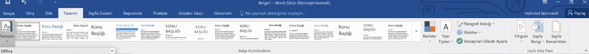
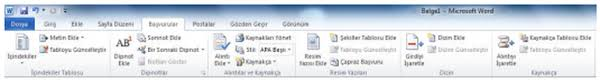

?? GIRIS SEKMESI - TUM DETAYLAR

?? PANO (CLIPBOARD)
Metin ve nesne tasima islemleri.
?? YAZI TIPI (FONT)
Karakter bazli bicimlendirme.
?? PARAGRAF (PARAGRAPH)
Blok bazli hizalama ve listeleme.
??? STILLER (STYLES)
Otomatik bicim setleri.
?? DUZENLEME (EDITING)
Belge icinde arama ve degisiklik.
? EKLE SEKMESI - TUM DETAYLAR

?? SAYFALAR (PAGES)
?? TABLOLAR (TABLES)
[ Ad | Soyad | Numara ]
??? CIZIMLER (ILLUSTRATIONS)
?? BAGLANTILAR (LINKS)
?? UST / ALT BILGI
?? METIN VE SIMGELER
?? TASARIM SEKMESI - TUM DETAYLAR

?? BELGE BICIMLENDIRME
Genel stil ve tema ayarlari.
? ARALIK VE EFEKTLER
?? SAYFA ARKA PLANI
Sayfa gorselligi ve guvenlik.
?? DUZEN SEKMESI - TUM DETAYLAR

?? SAYFA YAPISI (PAGE SETUP)
Kagidin fiziksel ozellikleri.
Dar: 1.27 cm
Diger: A3, Mektup (Letter), Zarf
?? PARAGRAF (PARAGRAPH INDENT)
Bloklar arasi bosluklar.
?? YERLESTIR (ARRANGE)
Nesne ve resimlerin hiyerarsisi.
?? BASVURULAR SEKMESI - TUM DETAYLAR

?? ICINDEKILER (TABLE OF CONTENTS)
Otomatik dizin olusturma.
Giris .......... 1
Gelisme ....... 5
?? DIPNOTLAR (FOOTNOTES)
Sayfa ici aciklamalar.
?? ATIFLAR VE KAYNAKCA
Alinti ve akademik kaynak yonetimi.
??? RESIM YAZILARI (CAPTIONS)
Gorsel ve tablo isimlendirme.
?? DIZIN (INDEX)
?? POSTALAR SEKMESI - TUM DETAYLAR

NOT: Bu sekme, bir veri kaynagi (Excel listesi gibi) ile Word belgesini birlestirerek toplu islem yapmanizi saglar. Genelde binlerce kisiye kisisellestirilmis mektup veya sertifika gonderirken kullanilir.
?? OLUSTUR (CREATE)
Temel zarf ve etiket ayarlari.
?? BIRLESTIRMEYI BASLAT
Veri baglantisi ve mektup tipi.
?? ALANLARI YAZ VE EKLE
Degisken verilerin yerlesimi.
? ONIZLEME VE BITIR
Final kontrol ve cikti alma.
?? GOZDEN GECIR SEKMESI - TUM DETAYLAR

?? YAZIM DENETLEME (PROOFING)
Hata ayiklama ve dil araclari.
?? DIL VE OKUMA
?? YORUMLAR (COMMENTS)
Geri bildirim ve notlar.
??? IZLEME (TRACKING)
Ortak calisma takibi.
?? KORU (PROTECT)
??? GORUNUM SEKMESI - TUM DETAYLAR

??? GORUNUMLER (VIEWS)
Belgenin ekran modlari.
?? GOSTER (SHOW)
Yardimci hizalama araclari.